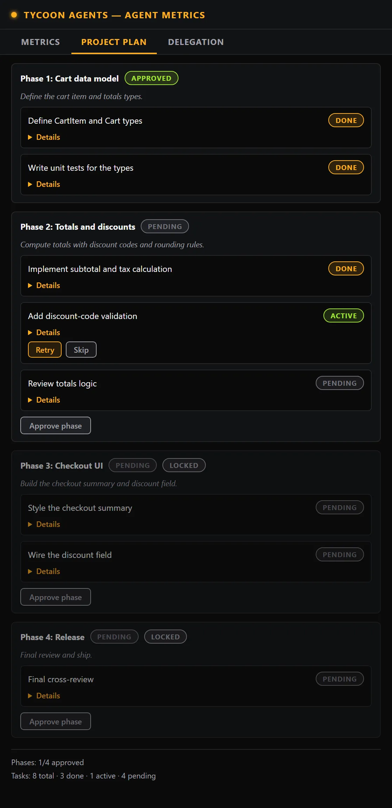

TycoonAgents Handbook / Chapter 12 / Part III · Reference
Phases, gates, and human approval
Project Plan is an optional feature — on by default (uncheck it in Settings to turn it off) — that turns a design doc into a structured plan of phases and tasks, with a human approval gate before each phase and each task result. It's driven by the project-plan skill, so Claude does the decomposing; you do the approving.
A plan is a set of phases, each holding a list of tasks. Every task carries its own acceptance criteria, so "done" has a concrete definition rather than being a judgment call in the moment.

| Badge / state | Meaning |
|---|---|
| Phase gate — Pending | The phase hasn't been approved yet; work in it won't proceed. |
| Phase gate — Approved | You've approved the phase; its tasks can run. |
| Task — active | Currently being worked. |
| Task — verifying | Work is done and is being checked against its acceptance criteria. |
| Task — done | Verified and accepted. |
| Task — needs_fix | Verification found an issue; it needs another pass. |
| Task — skipped | Deliberately skipped, at your direction. |
Approve phase. Unlocks that phase's tasks so work can start on them.
Approve / Retry / Skip. Per-task actions on the task itself — approve a finished task, ask for a retry, or skip it outright.
Tip
To have Claude keep working overnight or while you are away, say so up front: which phase gates to treat as approved, to use its best judgment when questions come up, and that you will check back when it is done. For example: "I'll be away overnight — treat the gates for phases 3–5 as approved, use your best judgment on open questions, and note any decisions you made for me to review." This covers the plan's phase gates only; Claude Code's own tool-permission prompts still follow your Claude Code permission settings.
Warn
If an active task shows no hook activity anywhere in the project for 20 minutes by default, the panel flags it: "⏸ Quiet for N min (project-wide) — agents may still be working. Check the terminal before retrying…", with an inline Retry / Skip confirm. This is a nudge, not an automatic action — activity is tracked project-wide (not just this task), so check your terminal before acting, and you decide whether to retry or skip.
Note
If plan.json ever gets corrupted, the panel offers Restore last good, which restores from plan.json.bak — a snapshot kept alongside the live plan file.
Completed plans move into an Archived Plans section — read-only, so you can look back at what a previous plan covered without it cluttering the active view.